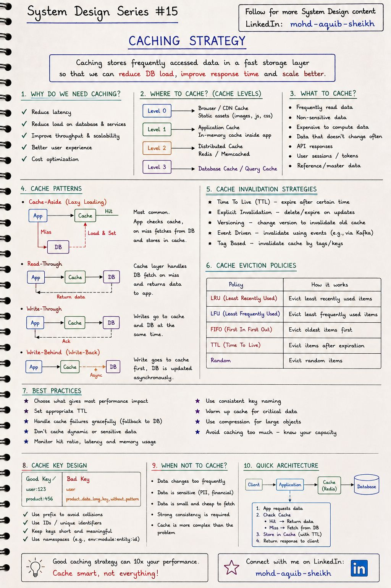
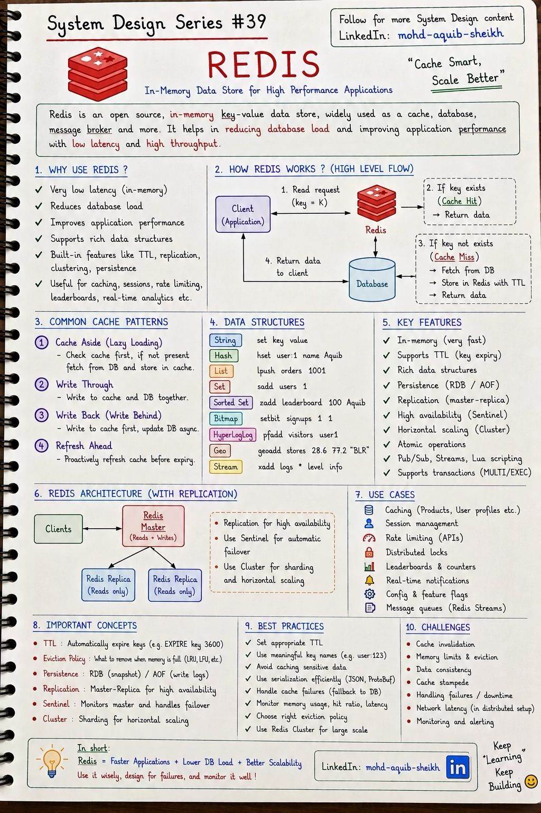
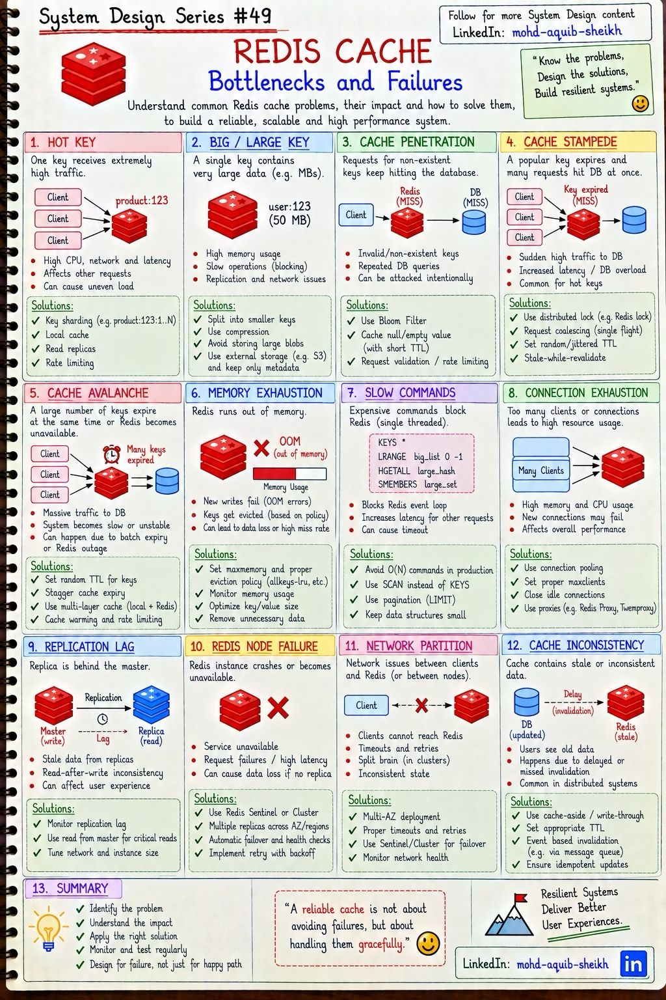

Кэширование и Redis
Кэш — самый дешёвый способ ускорить систему и самый надёжный способ получить трудноуловимые ошибки. Глава о том, где и что кэшировать, как читать и писать через кэш, что такое Redis — и двенадцать способов, которыми кэш выходит из строя.
9.1Стратегии кэширования#15
Кэш хранит часто запрашиваемые данные в быстром слое, чтобы не обращаться каждый раз к медленному. Результат — меньше задержка, меньше нагрузка на базу, выше пропускная способность. Плата — данные в кэше могут устареть.


Где кэшировать
| Уровень | Что | Особенность |
|---|---|---|
| 0 · Браузер и CDN | Статика: изображения, JS, CSS | Управляется заголовками Cache-Control, ETag; запрос вообще не доходит до сервера |
| 1 · В памяти приложения | Справочники, конфигурация | Быстрее всего (нет сети), но у каждого экземпляра своя копия — Caffeine в Java |
| 2 · Распределённый кэш | Сессии, результаты запросов, объекты | Общий для всех экземпляров — Redis, Memcached |
| 3 · Кэш базы данных | Страницы данных и индексов | Работает сам; настраивается объёмом памяти |
Шаблоны чтения и записи
| Шаблон | Как работает | Плюсы | Риски |
|---|---|---|---|
| Cache-aside (lazy loading) | Приложение: проверить кэш → промах → прочитать из БД → положить в кэш | Самый распространённый; кэшируется только востребованное; отказ кэша не роняет систему | Первый запрос медленный; окно устаревания |
| Read-through | То же, но в БД ходит сам кэш (библиотека) | Приложение не знает о БД | Нужна поддержка в кэше |
| Write-through | Запись идёт в кэш и синхронно в БД | Кэш всегда свежий | Запись медленнее; кэшируется и невостребованное |
| Write-behind (write-back) | Запись в кэш, в БД — асинхронно пакетами | Очень быстрая запись | Потеря данных, если кэш упал до сброса |
| Refresh-ahead | Кэш обновляет запись заранее, до истечения TTL | Нет промахов на горячих ключах | Лишняя работа для невостребованных |
Инвалидация — как старое значение покидает кэш: по времени (TTL), явным удалением при изменении, сменой версии в ключе, по событию из очереди, по тегам. Вытеснение — что удаляется, когда память кончилась: LRU (давно не использованные), LFU (редко используемые), FIFO, случайно.
- Почему удалять, а не обновлять. Два параллельных обновления могут записать в кэш значения в порядке, обратном записи в БД, и в кэше навсегда останется старое. Удаление идемпотентно.
- Почему сначала БД, потом кэш. Если сначала удалить ключ, параллельное чтение успеет положить в кэш старое значение до того, как БД обновится.
- Гонка всё равно возможна (чтение прочитало старое из БД, запись обновила БД и удалила ключ, чтение положило старое). Поэтому TTL ставят всегда — как страховку, ограничивающую время жизни ошибки.
9.2Redis#39
Redis — хранилище «ключ–значение» в оперативной памяти. Он быстр, потому что не обращается к диску при чтении и выполняет команды в одном потоке без блокировок. От простого кэша его отличает набор структур данных: значением может быть не только строка, но и список, множество, хэш-таблица, отсортированное множество.


| Структура | Команды | Типичное применение |
|---|---|---|
| String | SET, GET, INCR | Кэш объектов, счётчики, флаги, блокировки |
| Hash | HSET, HGET | Объект с полями: профиль, корзина |
| List | LPUSH, RPOP | Простая очередь, последние N событий |
| Set | SADD, SISMEMBER | Уникальные элементы, теги, пересечения |
| Sorted Set | ZADD, ZRANGE | Рейтинги, очереди с приоритетом, скользящее окно лимитера |
| Bitmap | SETBIT, BITCOUNT | Флаги на миллионы пользователей (активность по дням) |
| HyperLogLog | PFADD, PFCOUNT | Приблизительный подсчёт уникальных — 12 КБ на счётчик при любом объёме |
| Geo | GEOADD, GEOSEARCH | Поиск «рядом со мной» |
| Stream | XADD, XREADGROUP | Журнал событий с группами потребителей (тема 11) |
- Каждая команда атомарна —
INCRне нужно защищать блокировкой. На этом строятся счётчики, лимитеры и блокировки. - Медленная команда останавливает всех.
KEYS *на миллионе ключей «замораживает» сервер на секунды. В рабочей системе — толькоSCAN. - Один экземпляр использует одно ядро для команд. Масштабирование — репликами (чтение) и кластером (запись), тема 10.
Память конечна. Параметр maxmemory задаёт предел, maxmemory-policy — что делать при его достижении: allkeys-lru / allkeys-lfu для кэша (вытеснять любые ключи), volatile-* — только ключи с TTL, noeviction — отвечать ошибкой на запись (значение по умолчанию; подходит, когда Redis используется как основное хранилище).
В Java: клиент Lettuce (по умолчанию в Spring Data Redis, неблокирующий) или Jedis; абстракция @Cacheable / @CacheEvict; Redisson — для блокировок и распределённых коллекций.
9.3Узкие места и отказы кэша#49
Двенадцать типичных проблем кэша на Redis. Первые пять — про данные и ключи, остальные — про сам сервер и сеть. Три «классические» проблемы с похожими названиями (penetration, stampede, avalanche) спрашивают на собеседованиях чаще всего.


| # | Проблема | Что происходит | Решения |
|---|---|---|---|
| 1 | Hot key | Один ключ получает огромную долю запросов; перегружен один узел | Локальный кэш перед Redis, чтение с реплик, размножение ключа на копии |
| 2 | Big key | Значение на мегабайты: медленные операции, блокировка потока, проблемы репликации | Разбить на части, сжать, хранить большое в S3, а в Redis — ссылку |
| 3 | Cache penetration | Запросы к несуществующим ключам всегда промахиваются и бьют в БД | Кэшировать «пусто» с коротким TTL, фильтр Блума, валидация входа |
| 4 | Cache stampede | Популярный ключ истёк — сотни запросов одновременно идут пересчитывать его | Блокировка на пересчёт (один считает, остальные ждут), stale-while-revalidate, обновление заранее |
| 5 | Cache avalanche | Массово истекло много ключей или упал сам Redis — вся нагрузка на БД | Случайная добавка к TTL (jitter), многоуровневый кэш, прогрев, ограничение запросов к БД |
| 6 | Исчерпание памяти | Ошибки записи (OOM) или массовое вытеснение | maxmemory + политика вытеснения, TTL на всё, мониторинг |
| 7 | Медленные команды | KEYS *, HGETALL большого хэша блокируют сервер | SCAN, постраничное чтение, небольшие структуры, SLOWLOG |
| 8 | Исчерпание соединений | Слишком много клиентов, новые подключения отклоняются | Пул соединений, maxclients, закрытие простаивающих |
| 9 | Отставание реплик | Чтение с реплики возвращает старое | Критичное читать с мастера, следить за отставанием |
| 10 | Отказ узла | Недоступность, потеря данных без реплики | Sentinel или Cluster, реплики в разных зонах, ретраи с паузой |
| 11 | Разделение сети | Таймауты, split-brain | Несколько зон, разумные таймауты, кворум |
| 12 | Несогласованность с БД | В кэше устаревшие данные | Удаление при записи + TTL, инвалидация по событиям |
9.4Интерактив: что кэш даёт и что будет, когда он упадёт
| Отказ | Что происходит | Защита |
|---|---|---|
| Stampede (dogpile) | истёк популярный ключ — сотни запросов одновременно идут в БД за одним значением | single-flight / блокировка на ключ, обновление до истечения, stale-while-revalidate |
| Avalanche | одновременно истекло много ключей или упал кэш | случайный разброс TTL, реплики кэша, ограничение запросов к БД |
| Penetration | запросы несуществующих ключей всегда проходят в БД (в том числе атака) | кэшировать «нет такого» с коротким TTL, фильтр Блума |
| Hot key | один ключ получает непропорционально много запросов и перегружает узел | локальный кэш первого уровня, реплики для чтения, дробление ключа |
| Несогласованность | в кэше старое значение после обновления БД | удалять ключ после коммита, TTL как страховка, события изменений (CDC) |
9.5Самопроверка
В cache-aside при обновлении данных правильнее…
- Сначала обновить кэш, потом БД
- Обновить БД и удалить ключ из кэша — следующий читатель загрузит свежее значение
- Обновлять только кэш
- Ничего не делать, TTL всё исправит
Какая политика вытеснения подходит кэшу общего назначения в Redis?
- noeviction
- volatile-ttl
- allkeys-lru или allkeys-lfu
- random
Почему доля попаданий 99% против 95% — огромная разница?
- Нагрузка на базу определяется промахами: 1% против 5% — в пять раз меньше запросов
- Разницы почти нет
- Кэш становится быстрее
- Уменьшается память
Почему при изменении данных ключ в кэше удаляют, а не перезаписывают?
При параллельных изменениях порядок записи в кэш может не совпасть с порядком записи в базу: в базе останется новое значение, в кэше — старое, и надолго. Удаление не зависит от порядка: следующий читатель загрузит актуальное значение из базы. Плюс не тратятся ресурсы на значения, которые никто не прочитает.
Чем write-behind опасен и где он всё-таки уместен?
Подтверждённая клиенту запись существует только в памяти кэша до асинхронного сброса; отказ кэша в этот момент — потеря данных. Уместен там, где потеря небольшой части допустима, а поток записи велик: счётчики просмотров, лайки, метрики, позиция воспроизведения.
В полночь истекает TTL у миллиона ключей, загруженных одновременно. Что случится и как предотвратить?
Cache avalanche: все запросы промахнутся и пойдут в базу одновременно. Предотвращение — случайная добавка к TTL (например, 60 минут ± 10), чтобы истечение было размазано по времени; прогрев кэша заранее; ограничение параллельных запросов к базе.
Злоумышленник запрашивает /products/{id} со случайными несуществующими id. Почему кэш не помогает и что делать?
Cache penetration: для несуществующего товара в кэше нечего хранить, каждый запрос идёт в базу. Решения: кэшировать отрицательный результат («не найдено») с коротким TTL; фильтр Блума с множеством существующих id — отсекает заведомо отсутствующие без обращения к базе; проверка формата id и rate limiting.
Почему KEYS user:* нельзя выполнять на рабочем Redis?
Команда перебирает все ключи за O(N) в единственном потоке выполнения — на время её работы сервер не обслуживает остальных клиентов, возникают таймауты. SCAN делает то же порциями с курсором, уступая поток между вызовами.